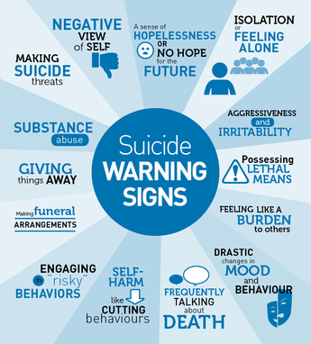

Youth suicide is when a young person at the age of 15 to 24 causes his or her death to ends their own life. Suicide is the second leading cause of death among Youth. Majority of youth who attempt suicide have an obvious mental health disorder which is depression. The act of suicide among the Youth are often impulsive and associated with the feelings of sadness, stress and disappointment. Youth also take suicide as the solution to their problems faced.
What are the warning signs of Youth Suicide?
Before trying to end their own life, a youth will have thoughts on wanting to die which is called suicidal ideation. They will have suicidal behaviour when they are focused on preparing to cause their death. These are the warning signs of youth suicide.

Changing in eating and sleeping habits
Losing interest in normal activities and in school
Using alcohol and drug
Neglecting their personal appearance
Saying words like “I want to kill myself,” or “I'm going to take my life.”
Giving verbal hints, such as “I won't be a problem much longer,” or “If anything happens to me, I want you to know ....”
Giving away favourite things or throws away important belongings